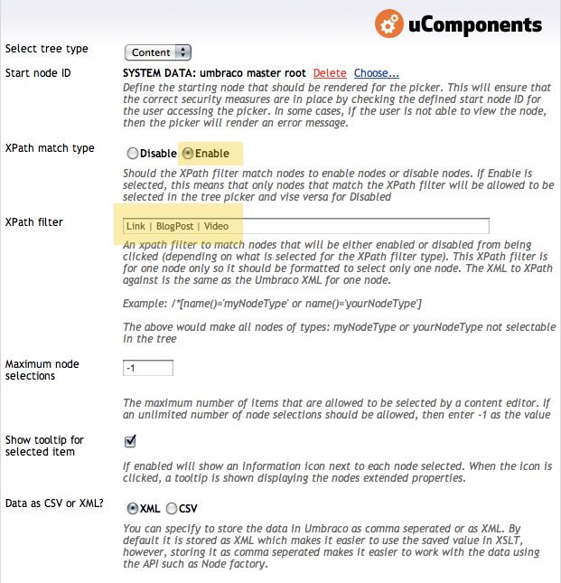

Written by Chriztian Steinmeier.
Got comments? I’m @greystate on Twitter.
← Back to Article Index
The Multi-Node Tree Picker in the uComponents package is a fantastic Data Type and one of the most versatile additions to Umbraco. You can (and probably already do) use it for a bunch of stuff; pretty much everywhere your content editors need to be able pick something (and/or maybe only particular types of things) and then easily modify their selections later, it’s an invaluable tool.
This article will show you an efficient way of rendering the contents of this Data Type, by way of using XSLT keys.
You have the choice of storing the picked items as CSV data or XML, but I don’t see a choice there — of course I’m going for XML; and you probably will too, when I’ve shown you how ridiculously easy it is to handle every kind of Document Type you’ve allowed your editors to pick… Welcome to another Pimp My XSLT article!
Let’s jump right in and pretend we’ve got three different Document Types that we’d like to be able to arbitrarily place in a “flowing stream” on our already amazing website: Simple links, embedded videos and blog posts —Tumblr here we come!
The HTML would look something like this[1]:
Knowing Umbraco’s flavor of XML, I’m aiming for roughly these chunks of data[2]:
A Multi-Node Tree Picker is very easy to set up - here’s how I set it up for this demo:

One very powerful feature is the XPath filter option, where you can specify a filter that decides which nodes can or can not be selected. I just wrote what I would have written in the match attribute of a template that should match the eligible nodes, e.g.:
<xsl:template match="BlogPost | Video | Link">
<!-- do stuff -->
</xsl:template>
I named my Data Type “Stream Content Picker” and I’ve put it on a “Stream Page” Document Type as the property “streamContent” - so the XML output will look something like this:
So inside the property element we get a <MultiNodePicker> element with a <nodeId> child for each picked node. Easy as pie…
At this point we should be ready to do what we all came here for, which of course is XSLT! (Yes, you too Sebastiaan :-)
I know that a lot of you probably already are thinking in terms of “looping all the nodeIds” etc., but hey, it wouldn’t be a real Pimp My XSLT article if I didn’t have at least one little trick up my sleeve, right?
But first, let’s get the templates into place - we need three main templates — one for each content type to show:
A couple of notes here:
Here’s a basic first attempt at the StreamPage macro XSLT:
(We assume that the aforementioned templates for BlogPost, Video & Link are present)
Though this is a perfectly fine and working solution, I am not very fond of it for a couple of reasons:
GetXmlNodeById() ‘x’ number of times to get something that’s already available to us in the Umbraco XML document we were given through the $currentPage parameterUsing a key to perform the lookup:
Here’s how that works:
The <xsl:key> creates a lookup table of all the nodes in the document, that matches the pattern in the match attribute - so in this case all Documents. The use attribute is the value to store in the index for the given node (and thus, the one used to locate the node again). We now have a simple table where we can ask for any node by its id, which we do with the key() function in XPath - the first argument is the name of the key and the second is the value to look up.
Important: The key() function can only find nodes in the document that contains the "context node" (in Umbraco, the root template is not inside that document, but as soon as you’ve applied templates to an element you’re usually safe). I’m using it within a template for <nodeId> elements which are indeed inside the Umbraco XML.
GetXmlNodeById() and this fancy key() thingymajiggy?
First off, GetXmlNodeById() is a C# extension function provided by Umbraco, so it’s obviously only available within the context of Umbraco, not in “standard” XSLT. The key() function, however, is a native XPath function and thus, available in any standard XSLT context. (I also happen to believe that keys outperform the extension when performing many lookups.)[3]
Secondly, the GetXmlNodeById() function is limited to only fetching by id, whereas the key() function is very versatile because you can define which elements to index and by which component - look at these examples for an idea of what’s possible with keys in XSLT:
<xsl:key name="hidden-state" match="*[@isDoc][not(self::Event)]" use="umbracoNaviHide" />
<!-- Find all hidden pages (that aren't Event documents) -->
<xsl:variable name="hiddenPages" select="key('hidden-state', 1)" />
<xsl:key name="docs-by-month" match="*[@isDoc]" use="substring(@createDate, 1, 7)" />
<!-- Find all docs created this month -->
<xsl:variable name="currentStuff" select="key('docs-by-month', concat($year, '-', $month))" />
Last, but not least: Because the picker retains the nodeId even if the actual node has subsequently been deleted, GetXmlNodeById() will return a node (though an <error> node) and your code needs to handle that. The key() function on the other hand, can only find nodes that exist in the document, so no extra code is needed and no errors are returned.
I’m still not satisfied with the way this flows, though; It’s a little too tightly coupled to the details of the implementation… also, there’s an even better way to use the key() function which we’ll try now.
OK, this is nice - first of all, putting the mode on the apply-templates call enables me to apply templates to the actual property instead of an element 2 steps down inside it. Reads much better.
(The thing to realize here is, that if a template doesn’t exist for an element in a given mode, a built-in template kicks in to apply the mode recursively down until a template is met - in this case our MultiNodePicker template).
Now look at that - by supplying a node-set instead of a single value as the second argument to the key() function, the XSLT processor automatically does the equivalent of calling the key() function for every element in the node-set but much more efficient. And because we’re using it in an apply-templates instruction, all the picked documents will be rendered using the templates we defined earlier - all done with that single line. XSLT was built for set operations like these so you should assume that they go by pretty snappy.
There is a caveat to the “snappiness” of said method, though - we’ll get the picked nodes in document order as opposed to the order from the Multi-Node Tree Picker. Because the control is so awesome it lets us (and your editors) rearrange the nodes with Ajaxy ease, we’ll of course need to fix that.
And let’s just make it a helper include-file while we’re at it, shall we?
Just to recap how simple this is:
Download the “_MultiPickerHelper.xslt” file here - it has a neat little option for power users to discover but I’ll let you figure that one out on your own, Pete :-)
You can also download the complete project files here for further scrutiny. Be warned - there are entities the size of kittens in there! :-)
Please enjoy, and a huge thanks goes to you for returning to pimpmyxslt.com so often!